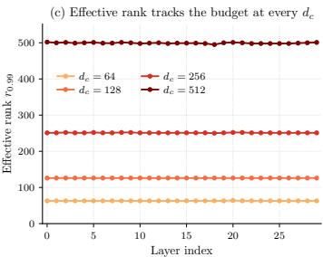

Figureure 1 · : Pretrained video diffusion attention is not low-rank, unlike in langFigure 1: Pretrained video diffusion attention is not low-rank, unlike in language models. Singular value analysis of $[ W _ { K } ; W _ { V } ] \in \mathbb { R } ^ { 3 0 7 2 \times 1 5 3 6 }$ across the 30 transformer blocks of Wan2.1- T2V-1.3B. At $d _ { c } = 1 9 2$ , the median layer captures only $E _ { \mathrm { m e d } } = 0 . 4 5 8$ of the spectral energy, and the 99%-energy effective rank exceeds 1300 in every layer.这张可视化用来解释 VideoMLA 学到的中间表征或对齐关系。重点看它是否支持正文里的机制判断。

Figureure 2 · : The composed operator occupies its full rank-dc budget at every $d _Figure 2: The composed operator occupies its full rank-dc budget at every $d _ { c }$ and every layer. Singular value analysis of the composed operator $M _ { \mathrm { l e a r n e d } } \ = \ [ \breve { W } _ { \uparrow } ^ { K } W _ { \downarrow } ^ { K V } ; \breve { W } _ { \uparrow } ^ { V } W _ { \downarrow } ^ { K V } ]$ for SVDinitialized VideoMLA students at $d _ { c } \in \{ 6 4 , 1 2 8 , 2 5 6 , 5 1 2 \}$ . (a) Median normalized spectra share a common envelope, truncated at $d _ { c } .$ (b) Cumulative spectral energy. (c) Layer-wise 99%-energy effective rank: $r _ { 0 . 9 9 } \approx 0 . 9 8 d _ { c }$ at every budget, uniformly across depth. The composed operator’s rank is determined by the architectural bottleneck, not by the spectral structure of the dense source.这张图来自论文 PDF 的结构化抽取。当前用于辅助理解 VideoMLA 的方法或实验，请结合正文精读段落一起看。